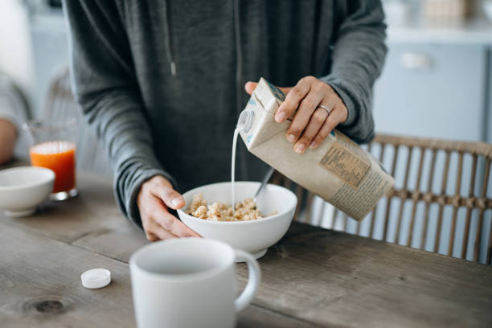

Cereal and Milk

Here's how to make the perfect milk and cereal breakfast.
Please follow the instructions in the CORRECT order as indicated below.
Ingredients:
Steps:
- Pour the cereal into the bowl;
- Pour the milk it into the bowl;
Note: Remember to follow these steps in the order indicated
as this is the only acceptable order, thanks.